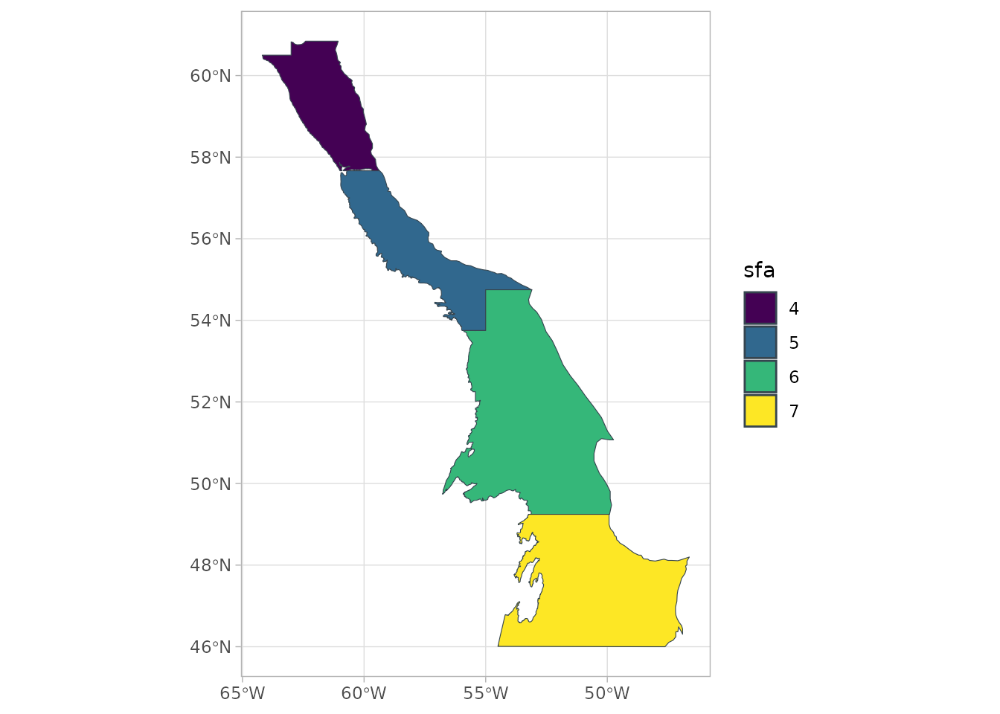
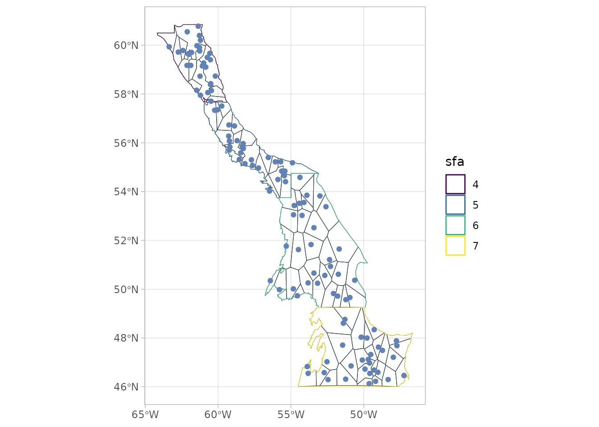
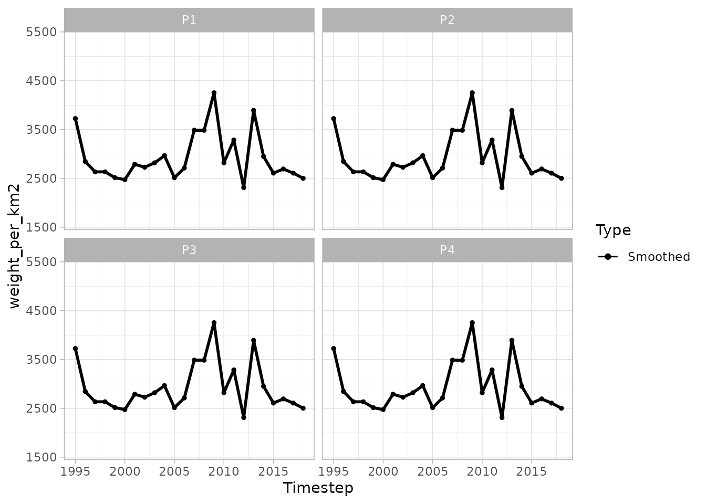
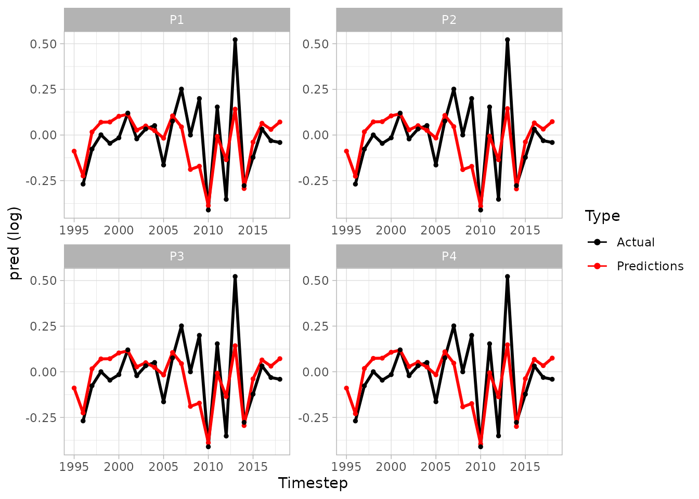

An example with simulated data
Source:vignettes/An_example_with_simulated_data.Rmd
An_example_with_simulated_data.Rmd
library(sspm)
#> Loading required package: sf
#> Linking to GEOS 3.12.1, GDAL 3.8.4, PROJ 9.4.0; sf_use_s2() is TRUE
#> Loading required package: mgcv
#> Loading required package: nlme
#> This is mgcv 1.9-3. For overview type 'help("mgcv-package")'.
library(mgcv)
library(dplyr)
#>
#> Attaching package: 'dplyr'
#> The following object is masked from 'package:nlme':
#>
#> collapse
#> The following objects are masked from 'package:stats':
#>
#> filter, lag
#> The following objects are masked from 'package:base':
#>
#> intersect, setdiff, setequal, unionThe following example shows the typical sspm workflow.
We will use simulated data.
sfa_boundaries
#> Simple feature collection with 4 features and 2 fields
#> Geometry type: MULTIPOLYGON
#> Dimension: XY
#> Bounding box: xmin: -64.18658 ymin: 46.00004 xmax: -46.6269 ymax: 60.84333
#> Geodetic CRS: WGS 84
#> sfa geometry area
#> 1 4 MULTIPOLYGON (((-59.36453 5... 47575648300 [m^2]
#> 2 5 MULTIPOLYGON (((-55 53.75, ... 62857719164 [m^2]
#> 3 6 MULTIPOLYGON (((-49.9269 49... 178716060645 [m^2]
#> 4 7 MULTIPOLYGON (((-54.48779 4... 147799572836 [m^2]
borealis_simulated
#> # A tibble: 1,800 × 8
#> year_f sfa weight_per_km2 temp_at_bottom lon_dec lat_dec row uniqueID
#> <fct> <chr> <dbl> <dbl> <dbl> <dbl> <int> <chr>
#> 1 1995 7 14.7 1.31 -62.8 59.2 1 y1995s7r1
#> 2 1995 7 366. 0 -56.7 55.2 2 y1995s7r2
#> 3 1995 7 108. 0.982 -60.6 56.9 3 y1995s7r3
#> 4 1995 7 62.3 0 -58.0 56.4 4 y1995s7r4
#> 5 1995 7 0 0.698 -59.0 57.1 5 y1995s7r5
#> 6 1995 7 0 1.45 -58.8 56.3 6 y1995s7r6
#> 7 1995 7 236. 1.05 -51.1 50.7 7 y1995s7r7
#> 8 1995 7 68.2 0 -54.1 54.5 8 y1995s7r8
#> 9 1995 7 93.6 1.86 -54.9 53.7 9 y1995s7r9
#> 10 1995 7 25.4 1.74 -54.7 50.5 10 y1995s7r10
#> # ℹ 1,790 more rows
predator_simulated
#> # A tibble: 10,200 × 7
#> year_f sfa weight_per_km2 lon_dec lat_dec row uniqueID
#> <fct> <chr> <dbl> <dbl> <dbl> <int> <chr>
#> 1 1995 7 9.90 -61.0 60.0 1 y1995s7r1
#> 2 1995 7 128. -60.0 57.6 2 y1995s7r2
#> 3 1995 7 358. -58.0 55.6 3 y1995s7r3
#> 4 1995 7 0 -58.0 55.9 4 y1995s7r4
#> 5 1995 7 103. -60.5 57.2 5 y1995s7r5
#> 6 1995 7 57.3 -53.7 51.8 6 y1995s7r6
#> 7 1995 7 58.6 -53.6 50.7 7 y1995s7r7
#> 8 1995 7 0 -50.2 50.1 8 y1995s7r8
#> 9 1995 7 0 -54.6 54.0 9 y1995s7r9
#> 10 1995 7 131. -52.8 51.0 10 y1995s7r10
#> # ℹ 10,190 more rows
catch_simulated
#> # A tibble: 2,020 × 7
#> year_f sfa catch lon_dec lat_dec row uniqueID
#> <fct> <chr> <dbl> <dbl> <dbl> <int> <chr>
#> 1 1991 4 2527. -62.2 59.5 1 y1991s4r1
#> 2 1991 4 4194. -61.0 58.0 2 y1991s4r2
#> 3 1991 4 7438. -62.4 60.3 3 y1991s4r3
#> 4 1991 4 0 -58.2 55.2 4 y1991s4r4
#> 5 1991 4 3837. -57.8 55.5 5 y1991s4r5
#> 6 1991 4 3196. -58.6 56.3 6 y1991s4r6
#> 7 1991 4 3214. -57.9 55.7 7 y1991s4r7
#> 8 1991 4 0 -56.4 54.4 8 y1991s4r8
#> 9 1991 4 539. -58.9 55.6 9 y1991s4r9
#> 10 1991 4 4234. -55.2 53.2 10 y1991s4r10
#> # ℹ 2,010 more rows- The first step of the
sspmworkflow is to create asspm_boundaryfrom ansfobject, providing theboundarythat delineates the boundary regions. The object can then be plotted withspm_plot(as can mostsspmobjects).
bounds <- spm_as_boundary(boundaries = sfa_boundaries,
boundary = "sfa")
plot(bounds)
- The second step consists in wrapping a
data.frame,tibbleorsfobject into asspm_dataobject, with a few other pieces of relevant information, such as the name, dataset type (biomass, predictor or catch, depending on the type of information contained), time column and coordinates column (i notsf) and unique row identifier. Here we wrap the borealis dataset that contains the biomass information.
biomass_dataset <-
spm_as_dataset(borealis_simulated, name = "borealis",
density = "weight_per_km2",
time = "year_f",
coords = c('lon_dec','lat_dec'),
uniqueID = "uniqueID")
#> ℹ Casting data matrix into simple feature collection using columns: lon_dec, lat_dec
#> ! Warning: sspm is assuming WGS 84 CRS is to be used for casting
biomass_dataset
#>
#> ‒‒ Dataset borealis ‒‒
#> → [1800 rows, 9 columns]
#> → Density : weight_per_km2
#> → Time : year_f- We do the same with the predator data, which are of the predictor type.
predator_dataset <-
spm_as_dataset(predator_simulated, name = "all_predators",
density = "weight_per_km2",
time = "year_f",
coords = c("lon_dec", "lat_dec"),
uniqueID = "uniqueID")
#> ℹ Casting data matrix into simple feature collection using columns: lon_dec, lat_dec
#> ! Warning: sspm is assuming WGS 84 CRS is to be used for casting
predator_dataset
#>
#> ‒‒ Dataset all_predators ‒‒
#> → [10200 rows, 8 columns]
#> → Density : weight_per_km2
#> → Time : year_f- The
sspmworkflow relies on the discretization of the boundary objects, the default method being voronoi tesselation.
bounds_voronoi <- bounds %>%
spm_discretize(method = "tesselate_voronoi",
with = biomass_dataset,
nb_samples = 30)
#> ℹ Discretizing using method tesselate_voronoi
bounds_voronoi
#>
#> ‒‒ Boundaries (Discrete) ‒‒
#> → [4 rows, 3 columns]
#> ★ Points — [120 features, 10 columns]
#> ★ Patches — [85 features, 4 columns]
#> → Column : sfa
#> → Area : area_sfaThe other available method is triangulate_delaunay for
delaunay triangulation. Here the a argument is used to set
the size of the mesh (see RTriangle::triangulate for more
details).
## Not run
bounds_delaunay <- bounds %>%
spm_discretize(method = "triangulate_delaunay", a = 1, q = 30)
bounds_delaunay- Plotting the object shows the polygons that have been created.
plot(bounds_voronoi)
## Not run
plot(bounds_delaunay)- The results of the discretization can also be explored with
spm_patches()andspm_points().
spm_patches(bounds_voronoi)
#> Simple feature collection with 85 features and 3 fields
#> Geometry type: POLYGON
#> Dimension: XY
#> Bounding box: xmin: -64.18658 ymin: 46.00004 xmax: -46.6269 ymax: 60.84489
#> Geodetic CRS: WGS 84
#> # A tibble: 85 × 4
#> sfa patch_id patch_area geometry
#> * <fct> <fct> [km^2] <POLYGON [°]>
#> 1 4 P1 3328. ((-63.11402 59.66424, -62.83338 60.43615, -63 60.8…
#> 2 4 P2 4099. ((-62.00856 58.53059, -61.78999 58.61768, -61.4823…
#> 3 4 P3 3308. ((-61.80265 59.43396, -61.97171 59.81804, -62.0892…
#> 4 4 P4 6814. ((-61.48231 59.06057, -61.78999 58.61768, -61.1115…
#> 5 4 P5 1677. ((-59.37831 57.67423, -59.43377 57.71988, -59.4892…
#> 6 4 P6 2282. ((-59.70893 58.16354, -60.11445 58.34307, -60.2929…
#> 7 4 P7 9080. ((-60.07796 59.21579, -60.11318 59.24152, -60.1409…
#> 8 4 P8 3003. ((-62.7581 59.09816, -62.49637 59.37714, -62.69224…
#> 9 4 P9 10478. ((-62.08921 59.41056, -61.97171 59.81804, -61.8026…
#> 10 4 P10 1601. ((-61.38138 58.03343, -61.11151 58.34397, -61.7899…
#> # ℹ 75 more rows
spm_points(bounds_voronoi)
#> Simple feature collection with 120 features and 9 fields
#> Geometry type: POINT
#> Dimension: XY
#> Bounding box: xmin: -63.35709 ymin: 46.12884 xmax: -47.23827 ymax: 60.77991
#> Geodetic CRS: WGS 84
#> # A tibble: 120 × 10
#> # Groups: sfa [4]
#> year_f weight_per_km2 temp_at_bottom lon_dec lat_dec row uniqueID
#> * <fct> [kg/km^2] <dbl> <dbl> <dbl> <int> <chr>
#> 1 1995 0 0.676 -49.0 47.6 16 y1995s7r16
#> 2 1995 0 0.808 -60.2 57.3 46 y1995s5r46
#> 3 1995 0 0 -60.0 57.4 47 y1995s5r47
#> 4 1996 0 1.36 -60.5 57.7 81 y1996s6r81
#> 5 1996 14731. 2.46 -55.5 54.8 86 y1996s6r86
#> 6 1996 9112. 3.47 -56.1 55.2 104 y1996s5r104
#> 7 1996 5442. 1.74 -55.8 50.0 109 y1996s5r109
#> 8 1996 19154. 0.747 -54.8 53.1 112 y1996s5r112
#> 9 1996 11333. 3.43 -47.2 46.5 120 y1996s5r120
#> 10 1996 2746. 1.51 -55.9 54.5 123 y1996s4r123
#> # ℹ 110 more rows
#> # ℹ 3 more variables: geometry <POINT [°]>, sfa <fct>, area_sfa [km^2]- The next step in this workflow is to smooth the variables to be used
in the final
sspmmodel, by using spatial-temporal smoothers, by passing each dataset throughspm_smooth. Here we first smoothweight_per_km2as well astemp_at_bottom. Note that the boundary columnsfacan be used in the formula as the data will be first joined to the provided boundaries.
biomass_smooth <- biomass_dataset %>%
spm_smooth(weight_per_km2 ~ sfa + smooth_time(by = sfa) +
smooth_space() +
smooth_space_time(),
boundaries = bounds_voronoi,
family=tw)%>%
spm_smooth(temp_at_bottom ~ smooth_time(by=sfa, xt = NULL) +
smooth_space() +
smooth_space_time(xt = NULL),
family=gaussian)
#> ℹ Fitting formula: weight_per_km2 ~ sfa + smooth_time(by = sfa) + smooth_space() + smooth_space_time() for dataset 'borealis'
#> ℹ Note: response variable temp_at_bottom is NOT a biomass density variable
#> ℹ Fitting formula: temp_at_bottom ~ smooth_time(by = sfa, xt = NULL) + smooth_space() + smooth_space_time(xt = NULL) for dataset 'borealis'
biomass_smooth
#>
#> ‒‒ Dataset borealis (Mapped) ‒‒
#> → [1801 rows, 12 columns]
#> → Density : weight_per_km2
#> → Time : year_f
#> → Smoothed data : [2040 rows, 8 columns]
#> ★ Smoothed vars: temp_at_bottom — weight_per_km2- The smoothed results for any smoothed variables (listed in “smoothed vars” above) can be easily plotted. Here the 4 panels represent 4 different patches in the same SFA. The panels show a very similar pattern due to the nature of the simulated data we are using. The data points are actually different, but the differences are not noticeable in this example case.
plot(biomass_smooth, var = "weight_per_km2", log = FALSE, interval = T) You can also make a spatial plot
plot(biomass_smooth, var = "weight_per_km2", use_sf = TRUE)- We also smooth the
weight_per_km2variable in the predator data.
predator_smooth <- predator_dataset %>%
spm_smooth(weight_per_km2 ~ smooth_time() + smooth_space(),
boundaries = bounds_voronoi,
drop.unused.levels = F, family=tw, method= "fREML")
#> ℹ Fitting formula: weight_per_km2 ~ smooth_time() + smooth_space() for dataset 'all_predators'
predator_smooth
#>
#> ‒‒ Dataset all_predators (Mapped) ‒‒
#> → [10201 rows, 11 columns]
#> → Density : weight_per_km2
#> → Time : year_f
#> → Smoothed data : [3400 rows, 7 columns]
#> ★ Smoothed vars: weight_per_km2- Before we assemble the full model with our newly smoothed data, we need to deal with the catch data. We first load the dataset.
catch_dataset <-
spm_as_dataset(catch_simulated, name = "catch_data",
biomass = "catch",
time = "year_f",
uniqueID = "uniqueID",
coords = c("lon_dec", "lat_dec"))
#> ℹ Casting data matrix into simple feature collection using columns: lon_dec, lat_dec
#> ! Warning: sspm is assuming WGS 84 CRS is to be used for casting
catch_dataset
#>
#> ‒‒ Dataset catch_data ‒‒
#> → [2020 rows, 8 columns]
#> → Biomass : catch
#> → Time : year_f- We then need to aggregate this data. This illustrate using the
spm_aggregatefunctions. Here we usespm_aggregate_catch:
biomass_smooth_w_catch <-
spm_aggregate_catch(biomass = biomass_smooth,
catch = catch_dataset,
biomass_variable = "weight_per_km2",
catch_variable = "catch",
fill = mean)
#> ℹ Offsetting biomass with catch data using columns: weight_per_km2, catch
biomass_smooth_w_catch
#>
#> ‒‒ Dataset borealis (Mapped) ‒‒
#> → [1801 rows, 12 columns]
#> → Density : weight_per_km2
#> → Time : year_f
#> → Smoothed data : [2040 rows, 13 columns]
#> ★ Smoothed vars: temp_at_bottom — weight_per_km2
#> ★ Vars with catch: weight_per_km2_borealis_with_catch- Once data has been smoothed, we can assemble a
sspmmodel object, using one dataset of type biomass, one dataset of type predictor and (optionnaly) a dataset of type catch.
sspm_model <- sspm(biomass = biomass_smooth_w_catch,
predictors = predator_smooth)
#> ℹ Joining smoothed data from all datasets
sspm_model
#>
#> ‒‒ Model (2 datasets) ‒‒
#> → Smoothed data : [2040 rows, 14 columns]
#> ★ Smoothed vars: temp_at_bottom — weight_per_km2_all_predators — weight_per_km2_borealis
#> ★ Vars with catch: weight_per_km2_borealis_with_catch- Before fitting the model, we must split data into test/train with
spm_split.
sspm_model <- sspm_model %>%
spm_split(year_f %in% c(1990:2017))
sspm_model
#>
#> ‒‒ Model (2 datasets) ‒‒
#> → Smoothed data : [2040 rows, 15 columns] / [1955 train, 85 test]
#> ★ Smoothed vars: temp_at_bottom — weight_per_km2_all_predators — weight_per_km2_borealis
#> ★ Vars with catch: weight_per_km2_borealis_with_catch- To fit the model, we might be interested in including lagged values.
This is done with
spm_lag.
sspm_model <- sspm_model %>%
spm_lag(vars = c("weight_per_km2_borealis",
"weight_per_km2_all_predators"),
n = 1)
sspm_model
#>
#> ‒‒ Model (2 datasets) ‒‒
#> → Smoothed data : [2040 rows, 17 columns] / [1955 train, 85 test]
#> ★ Smoothed vars: temp_at_bottom — weight_per_km2_all_predators — weight_per_km2_borealis
#> ★ Vars with catch: weight_per_km2_borealis_with_catch
#> ★ lagged vars: weight_per_km2_all_predators_lag_1 — weight_per_km2_borealis_lag_1- We can now fit the final spm model with
spm.
sspm_model_fit <- sspm_model %>%
spm(log_productivity ~ sfa +
weight_per_km2_all_predators_lag_1 +
smooth_space(by = weight_per_km2_borealis_lag_1) +
smooth_space(),
family = mgcv::scat)
#> ℹ Fitting SPM formula: log_productivity ~ sfa + weight_per_km2_all_predators_lag_1 + smooth_space(by = weight_per_km2_borealis_lag_1) + smooth_space()
sspm_model_fit
#>
#> ‒‒ Model fit ‒‒
#> → Smoothed data : [2040 rows, 17 columns] / [1955 train, 85 test]It is possible to access the GAM fit object in order to look at it in more details and, for example, evaluate the goodness of fit.
gam_fit <- spm_get_fit(sspm_model_fit)
summary(gam_fit)
#>
#> Family: Scaled t(7.001,0.195)
#> Link function: identity
#>
#> Formula:
#> log_productivity ~ sfa + weight_per_km2_all_predators_lag_1 +
#> s(patch_id, k = 30, bs = "mrf", xt = list(penalty = pen_mat_space),
#> by = weight_per_km2_borealis_lag_1) + s(patch_id, k = 30,
#> bs = "mrf", xt = list(penalty = pen_mat_space))
#>
#> Parametric coefficients:
#> Estimate Std. Error t value Pr(>|t|)
#> (Intercept) 6.871e-01 9.457e-02 7.265 5.49e-13 ***
#> sfa5 1.033e-01 9.140e-02 1.130 0.2585
#> sfa6 3.456e-02 1.117e-01 0.310 0.7570
#> sfa7 9.776e-02 1.201e-01 0.814 0.4158
#> weight_per_km2_all_predators_lag_1 -2.346e-05 1.054e-05 -2.225 0.0262 *
#> ---
#> Signif. codes: 0 '***' 0.001 '**' 0.01 '*' 0.05 '.' 0.1 ' ' 1
#>
#> Approximate significance of smooth terms:
#> edf Ref.df F p-value
#> s(patch_id):weight_per_km2_borealis_lag_1 20.58 30 42.486 <2e-16 ***
#> s(patch_id) 15.36 29 6.623 <2e-16 ***
#> ---
#> Signif. codes: 0 '***' 0.001 '**' 0.01 '*' 0.05 '.' 0.1 ' ' 1
#>
#> R-sq.(adj) = 0.611 Deviance explained = 42.1%
#> -REML = 2748.4 Scale est. = 1 n = 1870You can also use the summary method.
summary(sspm_model_fit, biomass = "weight_per_km2_borealis")
#> ── Productivity ────────────────────────────────────────────────────────────────
#> sfa mean min max sd
#> 1 4 0.9832311 0.6525739 1.162395 0.1264617
#> 2 5 0.9997828 0.5368248 1.411977 0.1888341
#> 3 6 1.0212750 0.6745112 1.315847 0.1341058
#> 4 7 1.2698199 0.6146548 11.900818 1.3920693
#> ── Biomass density ─────────────────────────────────────────────────────────────
#> sfa mean min max sd
#> 1 4 2841.073 [kg/km^2] 2660.985 [kg/km^2] 2975.945 [kg/km^2] 63.03612
#> 2 5 3041.162 [kg/km^2] 2551.791 [kg/km^2] 3590.993 [kg/km^2] 143.79976
#> 3 6 3226.922 [kg/km^2] 2115.044 [kg/km^2] 4173.462 [kg/km^2] 528.03225
#> 4 7 3209.607 [kg/km^2] 667.092 [kg/km^2] 4397.809 [kg/km^2] 242.45332
#> ── Biomass (with catch) ────────────────────────────────────────────────────────
#> sfa mean min max sd
#> 1 4 12303683 [kg] 4273381.520 [kg] 31182209 [kg] 8392039
#> 2 5 11289488 [kg] 5414527.323 [kg] 23610408 [kg] 4525524
#> 3 6 19247926 [kg] 3459958.832 [kg] 65388033 [kg] 10251233
#> 4 7 17633583 [kg] 4549.233 [kg] 60226347 [kg] 11329850- Plotting the object produces a actual vs predicted plot (with TEST/TRAIN data highlighted.
plot(sspm_model_fit, train_test = TRUE, scales = "free")
#> Warning: Removed 85 rows containing missing values or values outside the scale range
#> (`geom_point()`).
- We can also extract the predictions.
preds <- predict(sspm_model_fit)
head(preds)
#> Simple feature collection with 6 features and 6 fields
#> Geometry type: POLYGON
#> Dimension: XY
#> Bounding box: xmin: -64.18658 ymin: 59.66424 xmax: -62.83338 ymax: 60.80996
#> Geodetic CRS: WGS 84
#> pred_log pred patch_id year_f sfa patch_area
#> 1 -0.08863812 0.9151767 P1 1995 4 3328.183 [km^2]
#> 2 -0.22422105 0.7991385 P1 1996 4 3328.183 [km^2]
#> 3 0.01638835 1.0165234 P1 1997 4 3328.183 [km^2]
#> 4 0.06999519 1.0725030 P1 1998 4 3328.183 [km^2]
#> 5 0.07119760 1.0737934 P1 1999 4 3328.183 [km^2]
#> 6 0.10258982 1.1080368 P1 2000 4 3328.183 [km^2]
#> geometry
#> 1 POLYGON ((-63.11402 59.6642...
#> 2 POLYGON ((-63.11402 59.6642...
#> 3 POLYGON ((-63.11402 59.6642...
#> 4 POLYGON ((-63.11402 59.6642...
#> 5 POLYGON ((-63.11402 59.6642...
#> 6 POLYGON ((-63.11402 59.6642...We can also get the predictions for biomass by passing the biomass variable name.
biomass_preds <- predict(sspm_model_fit, biomass = "weight_per_km2_borealis")
head(biomass_preds)
#> Simple feature collection with 6 features and 8 fields
#> Geometry type: POLYGON
#> Dimension: XY
#> Bounding box: xmin: -64.18658 ymin: 59.66424 xmax: -62.83338 ymax: 60.80996
#> Geodetic CRS: WGS 84
#> # A tibble: 6 × 9
#> year_f patch_id sfa patch_area biomass_with_catch biomass
#> <dbl> <fct> <fct> [km^2] [kg] [kg]
#> 1 1995 P1 4 3328. NA NA
#> 2 1996 P1 4 3328. 9908909. 9904492.
#> 3 1997 P1 4 3328. 9627425. 9623009.
#> 4 1998 P1 4 3328. 9401564. 9393488.
#> 5 1999 P1 4 3328. 9414290. 9409128.
#> 6 2000 P1 4 3328. 9273919. 9269502.
#> # ℹ 3 more variables: biomass_density_with_catch [kg/km^2],
#> # biomass_density [kg/km^2], geometry <POLYGON [°]>We can also predict the biomass one step ahead.
biomass_one_step <- predict(sspm_model_fit, biomass = "weight_per_km2_borealis",
next_ts = TRUE)
head(biomass_one_step)
#> Simple feature collection with 6 features and 5 fields
#> Geometry type: POLYGON
#> Dimension: XY
#> Bounding box: xmin: -64.18658 ymin: 57.66667 xmax: -59.36453 ymax: 60.80996
#> Geodetic CRS: WGS 84
#> # A tibble: 6 × 6
#> patch_id year_f sfa biomass patch_area geometry
#> <fct> <dbl> <fct> [kg] [km^2] <POLYGON [°]>
#> 1 P1 2019 4 8986219. 3328. ((-63.11402 59.66424, -62.83338 60…
#> 2 P2 2019 4 11093751. 4099. ((-62.00856 58.53059, -61.78999 58…
#> 3 P3 2019 4 8939169. 3308. ((-61.80265 59.43396, -61.97171 59…
#> 4 P4 2019 4 18479001. 6814. ((-61.48231 59.06057, -61.78999 58…
#> 5 P5 2019 4 4534086. 1677. ((-59.37831 57.67423, -59.43377 57…
#> 6 P6 2019 4 6205772. 2282. ((-59.70893 58.16354, -60.11445 58…- We can produce an array of plots, as timeseries or as spatial plots
plot(sspm_model_fit, log = T, scales = 'free')
#> Warning: Removed 1 row containing missing values or values outside the scale range
#> (`geom_line()`).
#> Warning: Removed 85 rows containing missing values or values outside the scale range
#> (`geom_point()`).
plot(sspm_model_fit, log = T, use_sf = TRUE)
plot(sspm_model_fit, biomass = "weight_per_km2_borealis", scales = "free")
#> Warning: Removed 1 row containing missing values or values outside the scale range
#> (`geom_line()`).
#> Warning: Removed 85 rows containing missing values or values outside the scale range
#> (`geom_point()`).
plot(sspm_model_fit, biomass = "weight_per_km2_borealis", use_sf = TRUE)
plot(sspm_model_fit, biomass = "weight_per_km2_borealis",
next_ts = TRUE, aggregate = TRUE, scales = "free",
smoothed_biomass = TRUE, interval = T)
#> Warning: Removed 1 row containing missing values or values outside the scale range
#> (`geom_line()`).
#> Warning: Removed 4 rows containing missing values or values outside the scale range
#> (`geom_point()`).
#> Warning: Removed 100 rows containing missing values or values outside the scale range
#> (`geom_ribbon()`).
#> Removed 100 rows containing missing values or values outside the scale range
#> (`geom_ribbon()`).